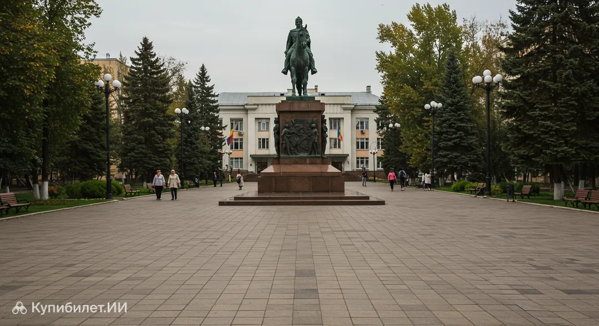
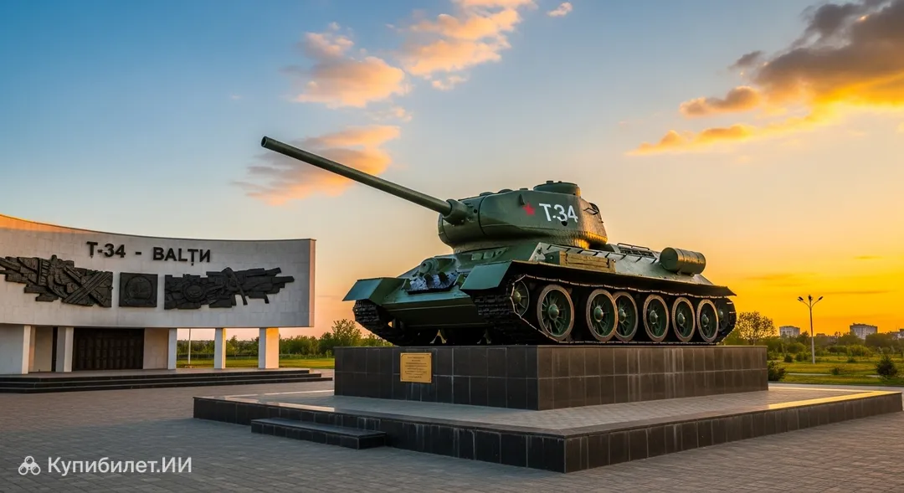

Dostoprimechatel
Памятник Штефану Великому

В самом сердце северной столицы, которую представляют Бельцы, возвышается величественный монумент, посвященный самому почитаемому правителю в истории, — Памятник Штефану Великому. Этот бронзовый гигант является не просто украшением города, а важным символом национальной гордости, который знает каждый житель страны Молдавия. Расположенный на Площади Независимости, прямо напротив здания мэрии, этот объект относится к важнейшим историческим памятникам республики. Статуя впечатляет своими масштабами: шестиметровая фигура господаря установлена на пятиметровом постаменте из натурального гранита, что делает монумент самым высоким среди всех памятников Штефану чел Маре в стране.
Мемориал Танка Т-34

В самом сердце города Бельцы, на центральной площади, возвышается Мемориал танка Т-34 — один из самых узнаваемых символов этого региона. Эта историческая достопримечательность, расположенная в гостеприимной стране Молдавия, представляет собой не просто военную технику, а настоящий монумент мужеству и памяти. Расположенный на Площади Независимости, прямо напротив здания мэрии, этот объект относится к важнейшим историческим памятникам республики. Статуя впечатляет своими масштабами: шестиметровая фигура господаря установлена на пятиметровом постаменте из натурального гранита, что делает монумент самым высоким среди всех памятников Штефану чел Маре в стране. Танк с бортовым номером 720 стал неотъемлемой частью городского ландшафта и обязательным пунктом в маршруте любого туриста, интересующегося военной историей. Это место, где история оживает, позволяя прикоснуться к эпохе великих свершений и почтить память героев прошлого.
Аквапарк «Кашалот»

Аквапарк «Кашалот» — это идеальное место для отдыха и развлечений в городе Бельцы. Здесь вы можете насладиться водными аттракционами, плавать в бассейне и провести время с семьей или друзьями. Аквапарк расположен в самом сердце города, что делает его удобным для посещения всеми жителями и туристами. Аквапарк «Кашалот» — это не просто бассейны, а целая индустрия эмоций, где инфраструктура продумана до мелочей для удобства посетителей всех возрастов. Близость к городской инфраструктуре позволяет легко вписать водные забавы в любой туристический маршрут по северной столице республики.